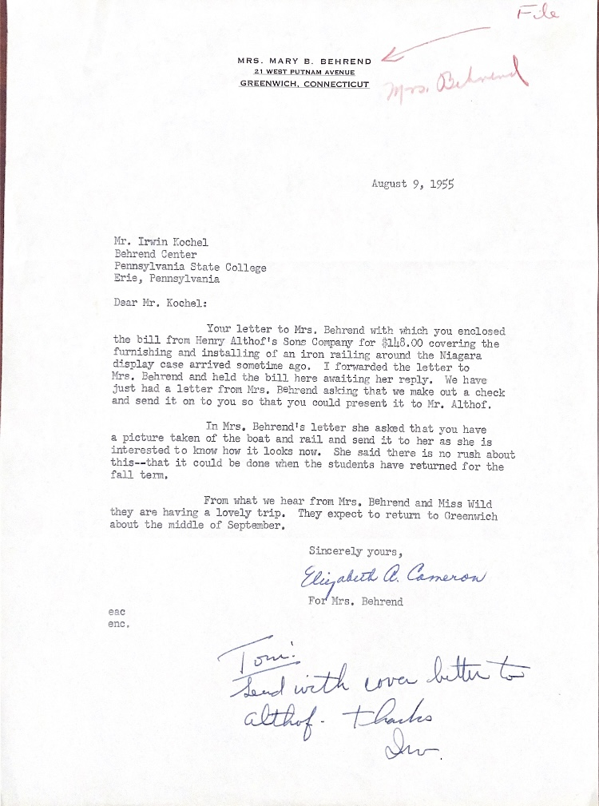

Letter from Elizabeth Cameron to Irvin Kochel, for Mrs. Behrend Elizabeth Cameron Letter August 9, 1955 Typewriter paper File Mrs. Behrend MRS. MARY B. BEHREND 21 WEST PUTNAM AVENUE GREENWICH, CONNECTICUT August 9, 1955 Mr. Irvin Kochel Behrend Center Pennsylvania State College Erie, Pennsylvania Dear Mr. Kochel: Your letter to Mrs. Behrend with which you enclosed the bill from Henry Althof's Sons Company for $148.00 covering the furnishing and installing of an iron railing around the Niagara display case arrived sometime ago. I forwarded the letter to Mrs. Behrend and held the bill here awaiting her reply. We have Just had a letter from Mrs. Behrend asking that we make out a check and send it on to you so that you could present it to Mr. Althof. In Mrs. Behrend's letter she asked that you have a picture taken of the boat and rail and send it to her as she is interested to know how it looks now. She said there is no rush about this--that it could be done when the students have returned for the fall term. From what we hear from Mrs, Behrend and Miss Wild they are having a lovely trip. They expect to return to Greenwich about the middle of September. Sincerely yours, Elizabeth A. Cameron For Mrs. Behrend eac. enc. Tom! Send with love letter althuf. Thanks Sir
